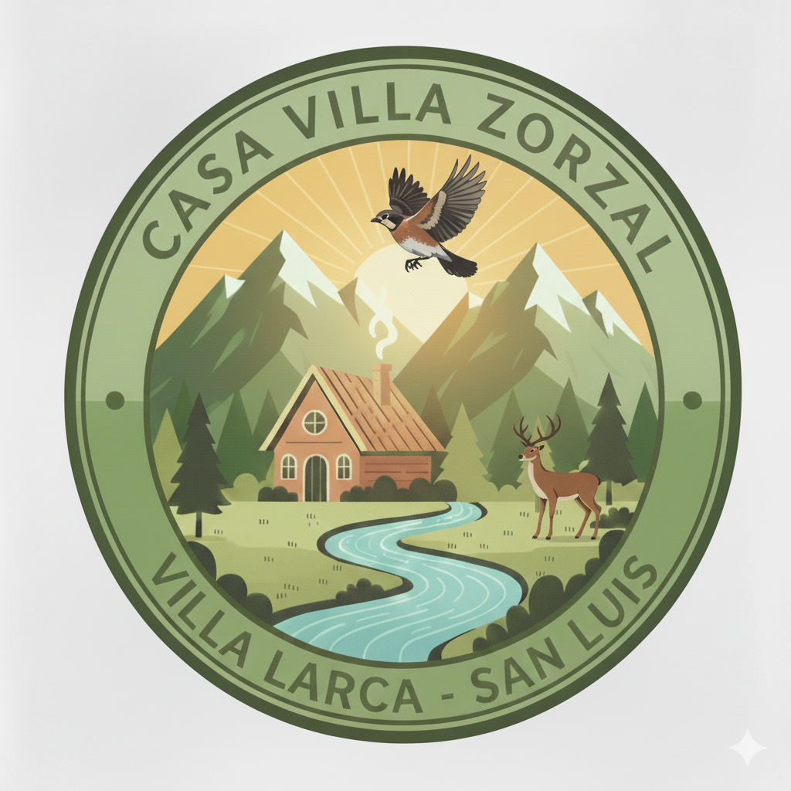

Casa Villa Zorzal nace de un sueño profundo: crear un santuario donde el tiempo parece detenerse y la naturaleza dicta el ritmo del día. Ubicada en el místico rincón de Villa Larca, nuestra residencia no es solo un lugar de alquiler, sino una experiencia diseñada para aquellos que buscan reconectar con lo esencial. Imagina despertar con el canto del zorzal mientras los primeros rayos del sol iluminan las Sierras de los Comechingones, sintiendo la frescura de un microclima único que renueva el espíritu. Cada rincón de nuestra casa ha sido pensado para ofrecer calidez y paz, desde la solidez de sus muros hasta la apertura de sus ventanales que invitan al paisaje a pasar. Nos apasiona la hospitalidad y creemos fervientemente que el verdadero lujo reside en el silencio, el aire puro y los momentos compartidos frente a una vista inigualable. Al elegirnos, no solo alquilas una propiedad, te sumerges en el corazón de San Luis, en un refugio donde la privacidad y la belleza natural se fusionan para crear recuerdos imborrables. Te invitamos a descubrir los secretos del Chorro de San Ignacio y a dejar que la magia de Villa Larca te envuelva en un abrazo eterno de tranquilidad y armonía. ¡Bienvenidos a su hogar lejos de casa!